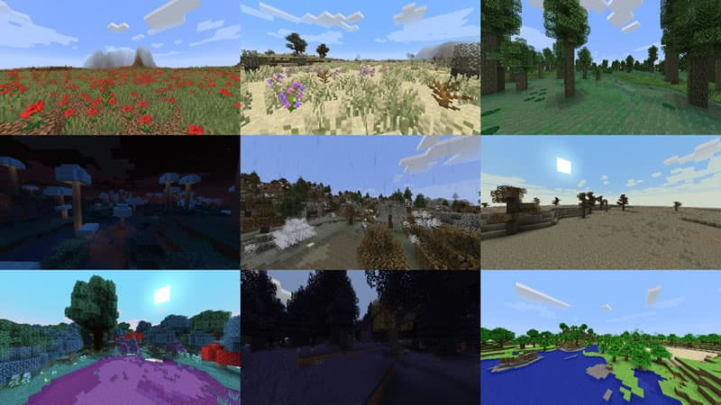

Minérios são blocos raros usados para se obter recursos. Os minérios são coletados principalmente para propósitos de criação , como para ferramentas e armaduras.

Biomas
Biomas são regiões do Minecraft com diferentes características geográficas, flora, relevo, temperaturas, humidade, céus, folhagens e cores. Biomas separam cada mundo gerado em ambientes diferentes; exemplos de biomas incluem alguns como florestas, taigas e tundras.
Ores are rare blocks used to obtain resources. Ores are collected mainly for breeding purposes, such as tools and armor
Biomes
Biomes are regions of Minecraft with different geographical characteristics, flora, relief, temperatures, humidity, skies, foliage and colors. Biomes separate each world generated in different environments; examples of biomes include some such as forests, taigas and tundras